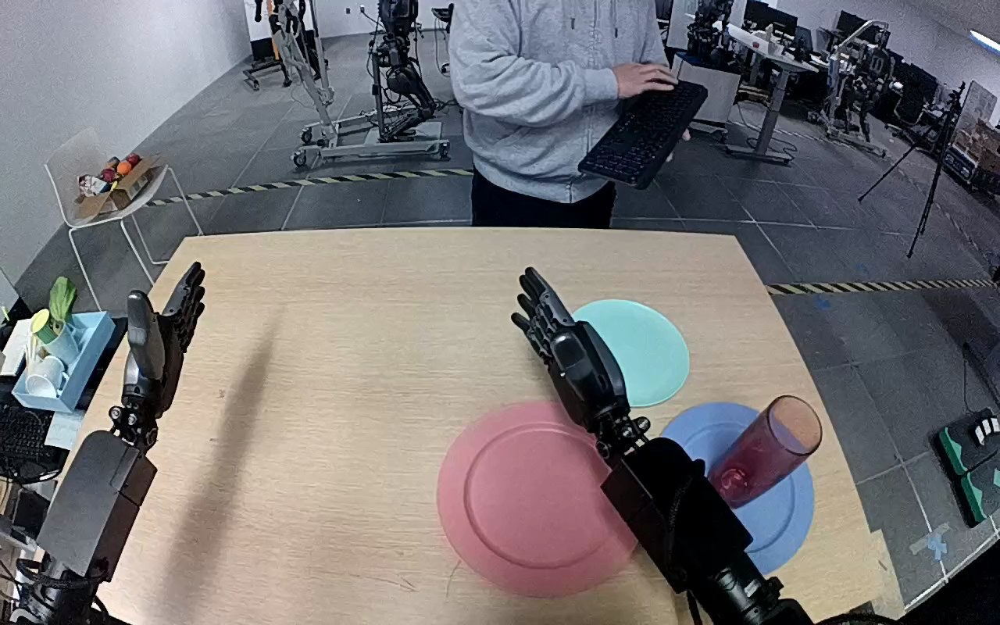

NVIDIA GR1 · 23
Video 23

Visual review action_review.json
{
"prompt_protocol": "humanoid_action_v1",
"prompt_provenance": "visually_authored_from_video_and_initial_frame",
"reviewed_contact_sheets": [
"sheet_001.jpg"
],
"inspected_frame_stride": 2,
"inspected_sampled_frame_count": 60,
"initial_scene": "Robot-facing tabletop view with both robot forearms entering from the lower edge. Red translucent drinking glass stands on blue plate at robot right; teal plate is farther forward and slightly to its left, and pink plate is nearer the center. Both hands initially open.",
"observed_sequence": [
{
"start_frame": 0,
"end_frame": 16,
"action": "Right hand remains open above the plates; left hand stays open to the robot left. Glass is upright on blue plate.",
"confidence": "high"
},
{
"start_frame": 17,
"end_frame": 58,
"action": "Right arm moves outward and lowers the open hand alongside the glass on the blue plate. Left hand remains stationary.",
"confidence": "high"
},
{
"start_frame": 59,
"end_frame": 82,
"action": "Right hand closes fingers and thumb around the side of the red glass while its base remains on the blue plate.",
"confidence": "high"
},
{
"start_frame": 83,
"end_frame": 96,
"action": "Right arm lifts the grasped glass clear of the blue plate and transports it forward-left toward the teal plate.",
"confidence": "high"
},
{
"start_frame": 97,
"end_frame": 110,
"action": "Right hand lowers the glass over the teal plate; the glass base reaches the plate while fingers remain around its side.",
"confidence": "high"
},
{
"start_frame": 111,
"end_frame": 119,
"action": "Right fingers begin opening as glass tilts on the teal plate. Hand remains directly beside the upper side and rim; full separation is not visible.",
"confidence": "high"
}
],
"arm_hand_roles": {
"right": "Sole manipulating hand: grasps, lifts, carries, lowers, and loosens grip on red glass.",
"left": "Stays open and apart on the robot left; does not contact glass or plates.",
"coordination": "Single-hand task; no hand-to-hand transfer or supporting role. Person across table holds keyboard but does not interact with glass."
},
"anatomical_side_evidence": {
"description": "Forward robot view shows both forearms extending from the lower robot-side edge toward the table. Active forearm enters from lower right, opposite the idle forearm entering from lower left; inward-facing palms/thumb positions are consistent with anatomical right and left hands in this forward view. Active hand is the robot right hand, also consistent with original instruction.",
"confidence": "high",
"uncertainty": "Torso and shoulder attachments are outside the image; side identification relies on paired forearm orientation and hand anatomy in the forward view."
},
"terminal_state": "Red glass has reached the teal plate and is tilted with its base on the plate. Right fingers are opening beside the glass rim/upper side, but the hand has not visibly withdrawn or fully separated. Blue plate is empty; left hand remains open and idle.",
"uncertainties": [
"Complete hand disengagement and stable final upright resting of the glass are not shown. Glass is tilted at frame 119 with right hand still near its rim; exact residual finger contact is partly occluded."
],
"annotation_discrepancies": [],
"evidence_frame_indices": [
0,
60,
78,
90,
104,
110,
114,
116,
118,
119
],
"selected_execution_status": "incomplete",
"execution_status_reason": "Transfer and lowering onto teal plate are visible, but complete disengagement and a settled final placement are not visible at the end.",
"inspection_coverage": "All 60 stride-2 samples from frame 0 through 118 were visually inspected on sheet_001.jpg; native source initial PNG and native frames 60,78,90,104,110,114,116,118,119 were visually inspected.",
"video_id": "23",
"dataset": "NVIDIA_GR1_100",
"dedicated_review_agent": "review_gr1_23",
"review_source_video": "NVIDIA_GR1_100/23/original/original.mp4",
"source_frame_count": 120,
"source_fps": 20.0,
"native_detail_frames": [
60,
78,
90,
104,
110,
114,
116,
118,
119
],
"world_model_prompt": "The robot grasps the red glass around its side with its right hand, lifts it from the blue plate, and carries it to the teal plate. It lowers the glass onto the teal plate and loosens its fingers, leaving the glass tilted with the right hand still beside its rim. Keep the camera fixed; preserve robot geometry, physically valid joint motion, and normal gripper opening and closing.",
"original_task_instruction": "Use the right hand to pick up red glass from blue plate to teal plate.",
"selected_segment": {
"start_frame": 0,
"end_frame_exclusive": 120,
"reason": "Complete original single-task reference; no cropping or trimming requested."
},
"source_video_sha256": "7a5bd5dd08a44f1cfe15735ddc7e277bbc69cce6f7ddbd0fcbf9ae8eda54152e",
"review_completed_at": "2026-10-13T17:48:57.497376+00:00"
}